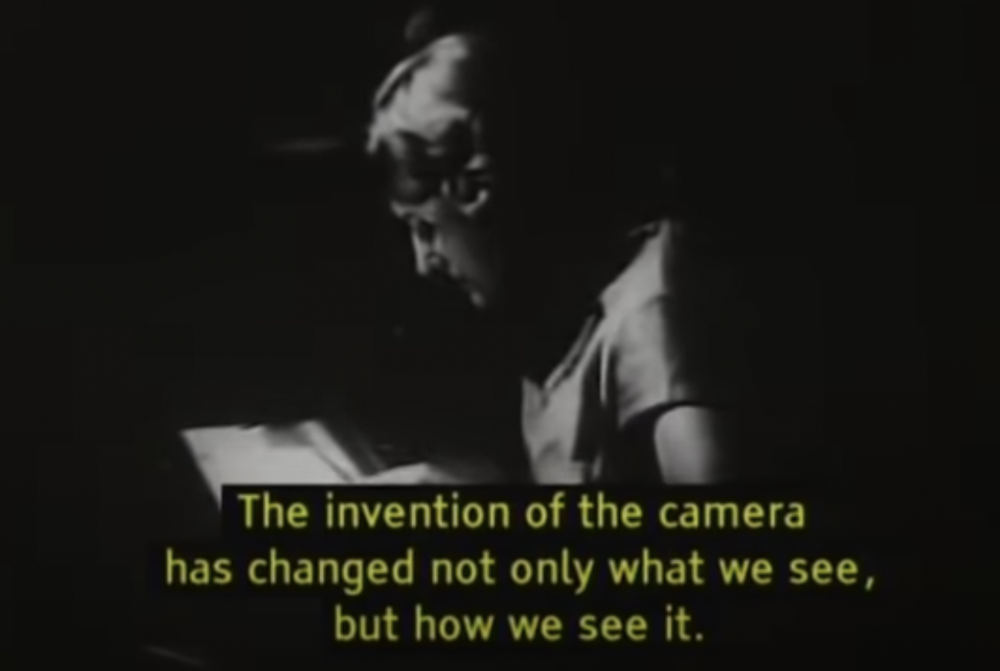

Ways of Seeing is a 1972 television series of 30-minute films created chiefly by writer John Berger and producer Mike Dibb. It was broadcast on BBC Two in January 1972 and adapted into a book of the same name.
-Wikipedia
It was very intellectually interesting because it was touching upon the points that i never thought of on my own. And the fact that he thought of it about half a century ago was amazing! :)
In “Ways of Seeing,” I think John Berger gives us an opportunity to new ways of seeing not only the artworks but also everything around us. Through four episodes, he criticizes old methods known as ways to appreciate past works of art, arguing that they are wrong and narrow-minded. He argues that the impressions or images now we have in particular artworks are maybe re-created or re-produced views, as the standard we appreciate a particular artwork, such as aesthetic value, truth and the artist’s intention, may actually be the way it was learned by certain ruling classes to mystify the artworks they owned. Also, with the example of sunset in evening, he also delivers his idea that the relation between what we see and what we know is never settled, and that we should look artworks in many ways, not just in one. - Jeeho Kim
